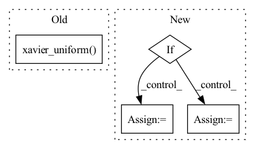

Pattern ID :1726

Before Change
// Initialization
// Xavier Initialization
nn.init.xavier_uniform(self.conv1.weight.data, 1.0)
nn.init.xavier_uniform(self.conv2.weight.data, 1.0)
self.model_base = nn.Sequential(
nn.ReLU(),
After Change
def __init__(self, in_channels, out_channels, noise_channel, stride=1, dropout=0, use_affine_level=False):
super(ResBlockUp, self).__init__()
self.use_affine_level = use_affine_level
if self.use_affine_level:
self.noise_func = Conv1dWithInitialization(
in_channels=noise_channel,
out_channels=out_channels*2,
kernel_size=3,
stride=1,
padding=1
)
else:
self.noise_func = Conv1dWithInitialization(
in_channels=noise_channel,
out_channels=out_channels,
kernel_size=3,
In pattern: SUPERPATTERN
Frequency: 3
Non-data size: 4
Instances
Fragment ID: 4417025
Project Name: janspiry/image-super-resolution-via-iterative-refinement
Commit Name: e4bf6add27ee36067514a0b3debcd3bf98dbaa17
Time: 2021-08-03
Author: jiangliangwei@tetras.com
File Name: model/modules/unet.py
M Class Name: ResBlockDis
N Class Name: ResBlockUp
M Method Name: __init__(7)
N Method Name: __init__(4)
M Parent Class: nn.Module
N Parent Class: nn.Module
M File Name: model/modules/unet.py
N File Name: model/modules/unet.py
M Start Line: 56
M End Line: 95
N Start Line: 53
N End Line: 94
'>
Before Change
// Initialization
// Xavier Initialization
nn.init.xavier_uniform(self.conv1.weight.data, 1.0)
nn.init.xavier_uniform(self.conv2.weight.data, 1.0)
self.model_base = nn.Sequential(
nn.ReLU(),
self.bn1,
After Change
def __init__(self, in_channels, out_channels, noise_channel, stride=1, dropout=0, use_affine_level=False):
super(ResBlockUp, self).__init__()
self.use_affine_level = use_affine_level
if self.use_affine_level:
self.noise_func = Conv1dWithInitialization(
in_channels=noise_channel,
out_channels=out_channels*2,
kernel_size=3,
stride=1,
padding=1
)
else:
self.noise_func = Conv1dWithInitialization(
in_channels=noise_channel,
out_channels=out_channels,
kernel_size=3,
'>
Fragment ID: 4417031
Project Name: janspiry/image-super-resolution-via-iterative-refinement
Commit Name: 12c2447fe9d989a51a1674b23fbb225c783186e5
Time: 2021-08-03
Author: lw_jiang@foxmail.com
File Name: model/modules/unet.py
M Class Name: ResBlockDis
N Class Name: ResBlockUp
M Method Name: __init__(7)
N Method Name: __init__(4)
M Parent Class: nn.Module
N Parent Class: nn.Module
M File Name: model/modules/unet.py
N File Name: model/modules/unet.py
M Start Line: 56
M End Line: 95
N Start Line: 53
N End Line: 94
'>
Before Change
self.fc3 = LinearWeightNorm(hidden_dim, input_dim, weight_scale = 1)
self.bn1_b = Parameter(torch.zeros(hidden_dim))
self.bn2_b = Parameter(torch.zeros(hidden_dim))
nn.init.xavier_uniform(self.fc1.weight)
nn.init.xavier_uniform(self.fc2.weight)
def forward(self, batch_size,z=None):
z = Variable(torch.rand(batch_size, self.z_dim), requires_grad = False).to(self.device) if z is None else z
After Change
self.num_hidden=len(hidden_dim)
self.activations=activations
for _ in range(self.num_hidden):
if _==0:
in_dim=z_dim
else:
in_dim=hidden_dim[_-1]
out_dim=hidden_dim[_]
fc=nn.Linear(in_dim, out_dim, bias=False)
nn.init.xavier_uniform(fc.weight)
'>
Fragment ID: 4417038
Project Name: ygzwqzd/lamda-ssl
Commit Name: ea5ee280fc4c0242970da002d41f42c1aaed9c96
Time: 2022-03-18
Author: 1129198222@qq.com
File Name: Semi_sklearn/Network/ImprovedGan.py
M Class Name: Generator
N Class Name: Generator
M Method Name: __init__(6)
N Method Name: __init__(5)
M Parent Class: nn.Module
N Parent Class: nn.Module
M File Name: Semi_sklearn/Network/ImprovedGan.py
N File Name: Semi_sklearn/Network/ImprovedGan.py
M Start Line: 63
M End Line: 71
N Start Line: 70
N End Line: 91